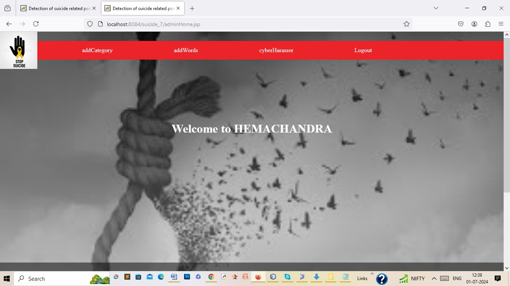

Projects
Bus Ticket Booking
The proposed system “BUS TICKET BOOKING” is a system that is used in a bus transportation system, which is used to reserve seats, cancel reserved seats which is more secure. The proposed system is built for managing and computerizing the database of users. It maintains all customer details, bus details, reservation details. We can pay online for tickets using credit/debit card.And also shows the price ranges from one point to another point. In Existing system, there are charges for reserved ticket cancellation and we get back our money for cancellation after few working days but in our proposed system there are no charges for cancellation and we get our money after a while after we cancel the ticket. In proposed system we can resell bus tickets from one person to other person instead of cancelling tickets for less cost than the original cost or they can sell at the original price. The database is updated time to time and a user can reserve his ticket from any part of the world and at any time.
.png)
Detection of Suicidal Notes
While social media offer great communication opportunities, they also increase the vulnerability of children to threatening situations online. Recent studies report that cyberbullying constitutes a growing problem among children. Successful prevention depends on the adequate detection of potentially harmful messages and the information overload on the Web requires intelligent systems to identify potential risks automatically.Online predators try to gradually seduce their targets through attention, affection, kindness, and even gifts, and often devote considerable time, money and energy to this effort. They are aware of the latest music and hobbies likely to interest kids. They listen to and sympathize with kids' problems. They also try to ease young people's inhibitions by gradually introducing sexual content into their conversations or by showing them sexually explicit material. Here we have proposed solution will detect suspect profiles based on child grooming behavior patterns followers, hate speech provokers, stalking and bullying mentality profiles and explicit content explorers (postings, comments) on social media platforms and other websites
